课堂讨论是您有更多机会与其他学生交流、向课程团队提问，以及参与课程社区。 如果您是第一次参加在线论坛，可以参考 “anatomy”
本章还描述了edX论坛的功能，这些功能能使您的讨论效率最大化。这些功能包括：
帖子：“请各位做个自我介绍吧！”
- 回复：“我叫Lee，现在在堪培拉，是一名中学数学老师。”
- 回复：“大家好，我叫苏梅，来自中国香港。”
- 评论：“嗨苏梅，我也在香港上课。组个队不？”
- 评论：“同求组队！希望组队能帮我解决作业问题= =。”
- 回复：“哈喽，我在约翰内斯堡，我在上高考培训班。”
本例涵盖了您在讨论中的不同贡献方式。“帖子”即话题，“回复”即对帖子内容的回复， “评论”则是观众针对某条回复的看法。在发布帖子、发表回复、评论之前， 先想想哪种形式更适合您想表达的内容。这可以让课堂讨论更加井然有序。
大多数edX课程都会为学生提供机会讨论视频课程、阅读任务、课后问题及其他课程内容。 这种针对某个特定内容而设的讨论称为“课题”。特殊讨论课题通常出现在相应内容的下方。
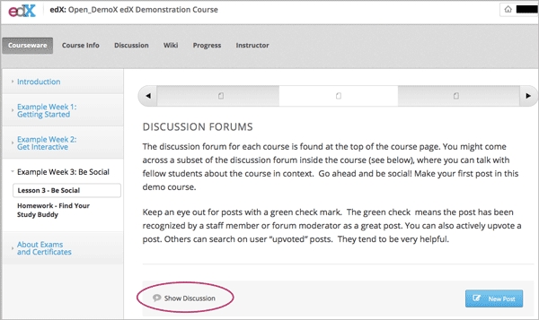edX课程通常包含几个全课堂讨论课题，譬如“常见问题解答”、“疑难解答”等等。 您可在课程的 讨论 页面访问这些课题：单击 所有 讨论 下拉箭头即可。
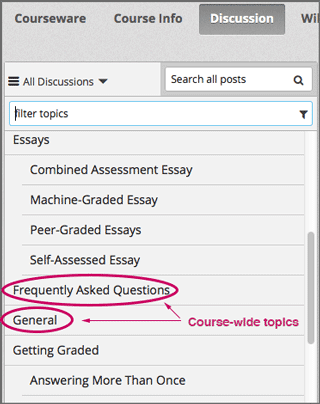访问 讨论 页面时，您可以阅读这些课题，并在其下发表内容。
注意，您不仅可以在 讨论 页面访问特殊讨论课题，也可以在浏览 课件 页面的课程内容时访问特殊讨论课题。 但是全课堂讨论课题只能从 讨论 页面访问。
请先浏览课题列表，然后选择最合适的课题发帖，这样能使其他兴趣相投的人更容易找到、阅读、回复您的帖子。
当您针对某个课题贡献帖子时，帖子通常分为“提问帖”和“讨论帖”。
发帖时，您需要决定帖子的类型。
您访问“讨论”页面时，带有问号标记的帖子为提问帖，带有对话气泡标记的为讨论帖。
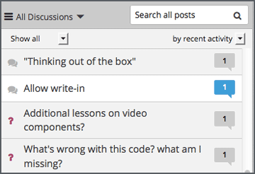如果您不知道自己的帖子到底属于哪种类型，可以想想， 您是想得到具体的信息（提问帖），还是只是想开展一次开放式的对话（讨论帖）？ 如果您需要得到教员的回答，请确保您发布的是提问帖，这样教员才能合适地解答。
您可以在发帖前试着找找其他人有没有提过和你类似的问题，或者发起您感兴趣的会话， 如果有，不妨在其他类似的帖子下方发表内容，而不必新开一条帖子，如此， 可以使大家的讨论效率最大化。 您可以搜索特定内容，也可以专门浏览含有您感兴趣内容的讨论课题。
您可以单击“讨论”页面，在帖子列表上方的“搜索所有帖子”字段中输入关键词、关键句子， 甚至某个单词的一部分，从而搜索整个列表，查找您需要的内容。按回车键，搜索结果为：
单击“讨论”，从下拉列表中选择关于某项课程内容或某类问题的课题。 列表即只会显示您选择的那类帖子。
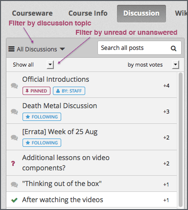为控制“讨论”页面中帖子的数量，您可以通过页面上方的筛选功能选择某一类型的帖子， 默认筛选条件为“所有帖子”。
为保证其他学生及课程团队能够找到、回复您的帖子，请选择正确的帖子类型：“提问”还是“讨论”？
单击“课件”
打开您想要发帖的课题
单击“查看讨论”查看其他人发布的内容
您可以快速浏览已经发布的帖子。通常，帖子只会显示标题和开头几句话。 如果您想查看帖子的完整内容以及其下的评论和回复，单击“展开讨论”。
您可根据以下流程在全课堂讨论课题中发帖。
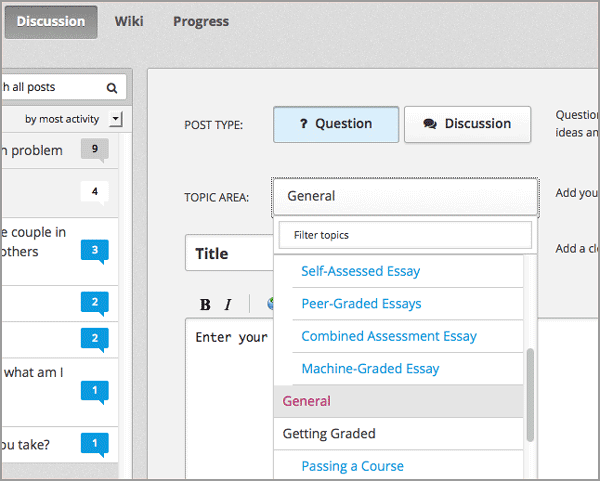
在讨论中，您可以通过回复功能回复某条原创帖，或通过评论功能展开某条回复内容。
发表回复、评论时也可以使用添加链接等功能，具体操作与发帖时的操作相同。
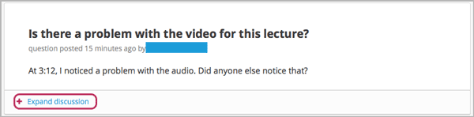
- 单击“添加回复”对某条帖子内容发表回复。回复完成后，单击“提交回复”。
- 单击某条回复下的“添加评论”字段。评论完毕后，单击“提交评论”。
您可根据以下流程在全课堂讨论课题中发帖。
- 单击“添加回复”对某条帖子内容发表回复。回复完成后，单击“提交回复”。
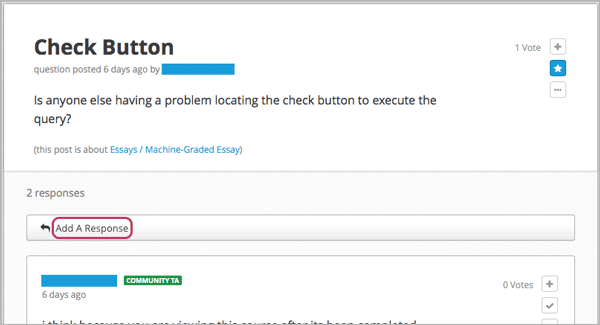
- 单击某条回复下的“添加评论”字段。评论完毕后，单击“提交评论”。
“讨论”页面的帖子列表提供了一系列的标识提示， 帮助您快速找到新帖子以及含有未读评论、回复的帖子， 并将它们与已经完全阅读过的帖子区分开。
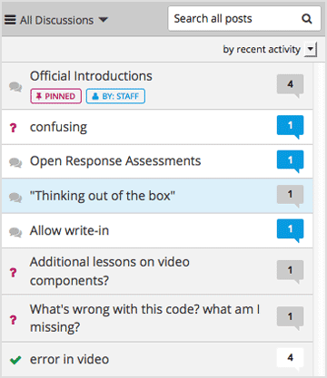
气泡标记中显示的是该会话中贡献的总数量（包括帖子、回复、评论）。 将鼠标移到气泡标记上，即可查看未阅读的贡献数量。
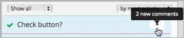只有通过“按活跃时间排序”和“按活跃度排序”分类出来的帖子才会显示不同颜色的气泡标记。 如果您将帖子排序方法改为“按点赞数量排序”，则气泡标记出显示的是某条帖子的点赞人数。 请参阅 给帖子或回复点赞.
您可以选择订阅每日摘要邮件，它会为您梳理正在关注的帖子的最近动态。 单击“讨论”→“接收每日更新”即可。
您在阅读其他学生或课程员工发表于讨论课题下的内容时， 可以通过反馈功能表达自己的想法，而无需另写一条评论或回复。您可以：
您可以使用贡献内容右上角的图标选择相应的功能。您可将鼠标放在某个图标上，图标处会出现对应的功能标签。
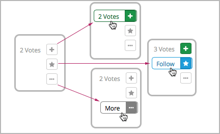单击“更多”图标，查看更多操作选项。
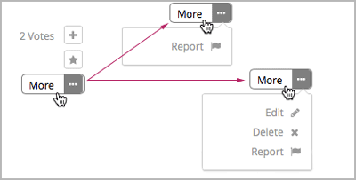如果您喜欢某条帖子或者其下的回复，可以为它点赞： 查看帖子或回复，单击右上角的“点赞”图标即可。
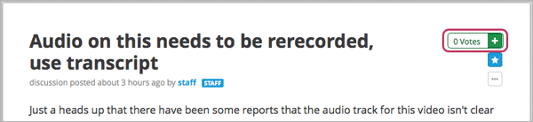您可以将帖子按照点赞数量排序：单击排序选项列表，选择“按点赞数量排序”。
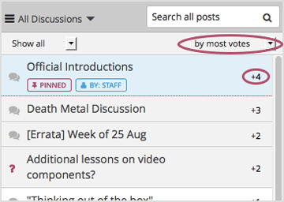每条帖子获得的点赞数量会出现在帖子列表中。（给回复点的赞不算在内）
如果您看见一条非常感兴趣的帖子，觉得日后可能还会再看， 您可以收藏该帖：查看帖子，单击“收藏”标签即可。
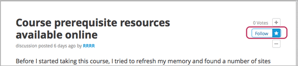帖子列表中，您收藏的帖子下方会显示“已收藏”。
如果您只想查看收藏的帖子，只需单击下拉列表中的“我收藏的帖子”即可。如图：
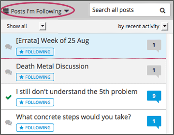所有参与课程的人均可回答问题。发表一条回复，附上您的回答即可。
发帖人和课程工作人员可以判定回复是否正确：单击回复右上角的“采纳答案”图标即可。
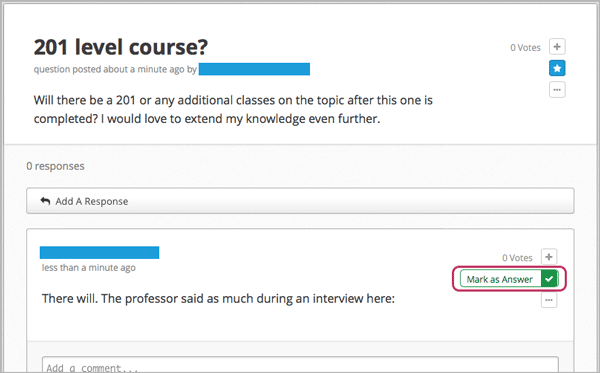如果有答案被采纳，“讨论”页面中，帖子标题前的“？”会变成“√”。
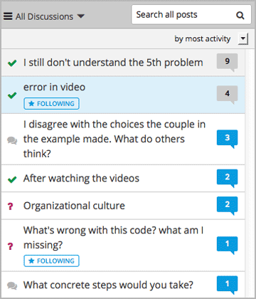您可以向论坛协调员举报任何您认为违规的内容：查看该内容，单击“更多”→“举报”。
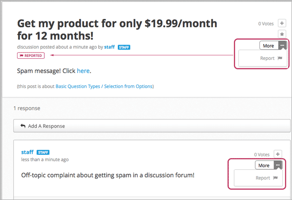